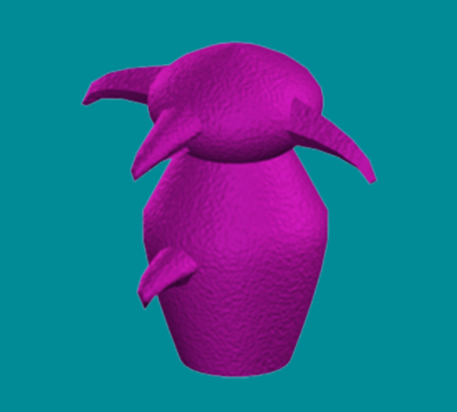

-
plok samar
-
plok osmit

-
plok galli
-
plok radok

-
plok tasio

The greebles refers to an invented category of novel objects used as stimuli in psychological studies of object and face recognition. They were named by the psychologist Robert Abelson. The greebles were created for Isabel Gauthier's dissertation work at Yale, so as to share constraints with faces: they have a small number of parts in a common configuration. Greebles have appeared in psychology textbooks, and in more than 25 scientific articles on perception. They are often used in mental rotation task experiments. The Greebles study is remarkable because Gauthier demonstrated that, after training participants on the many aspects of Greebles, the fusiform face area (FFA) in the participants' brains responded just as well to Greebles as it did to human faces. This suggests that people can improve their ability to recognize faces and objects, and that the FFA is not strictly used for recognizing human faces.